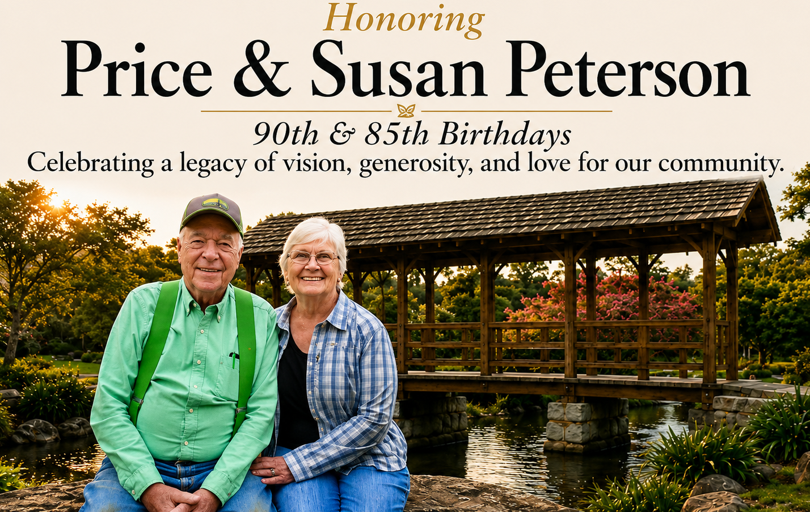

Honramos un legado y ampliamos el futuro del parque
El Proyecto Peterson se creó en 2026 para honrar a Susan y Price Peterson con motivo de sus cumpleaños 85 y 90, y para celebrar el extraordinario legado que han creado para la comunidad de Boquete. Mucho antes de que existiera el Parque Biblioteca Boquete, los Peterson fundaron la Fundación Biblioteca de Boquete y ayudaron a crear la biblioteca comunitaria, que se ha convertido en un centro de aprendizaje, cultura y convivencia. Más adelante dirigieron su visión hacia la creación del parque y transformaron lo que antes era un terreno rocoso sin desarrollar en uno de los espacios públicos más apreciados de Boquete. Con su visión, generosidad y compromiso inquebrantable con la comunidad, han enriquecido la vida de miles de residentes y visitantes.

El Proyecto Peterson da continuidad a esa visión. Las contribuciones al proyecto ayudarán a financiar la construcción de un cruce sobre el río Caldera y el desarrollo de senderos a través del hermoso bosque de la otra orilla, lo que abrirá a los visitantes una sección completamente nueva del parque. Esta ampliación hace realidad una parte importante del sueño original de los Peterson: permitirá que las generaciones futuras disfruten aún más de la extraordinaria belleza natural del parque y, al mismo tiempo, rendirá homenaje al impacto duradero de dos personas cuya generosidad ha contribuido a dar forma al Boquete que conocemos hoy.
Su donación al Proyecto Peterson ayuda a abrir un nuevo capítulo en la historia del parque para las generaciones venideras.